おまけ
台湾大佛列伝4、最後までお付合いいただきありがとうございました。
海外編恒例のおまけでございます。
ごゆるりと眺めていただければ、と。
・鉄道
今回はかなり鉄道のお世話になった。
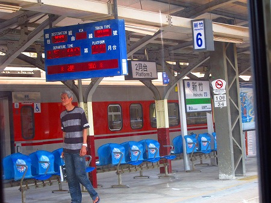
本編でも述べたが台湾の鉄道は日本統治時代に整備されたゆえ旧国鉄カラーを色濃く反映している。
乗車しているだけで猛烈にノスタルジックな気持ちになるのは私だけではあるまい。
ちなみに日本の方が作った台湾時刻表を日本で購入して持っていったのだが、これが滅法便利だった。台湾を鉄道で移動される方には超オススメだ。
そんな電車で出くわした凄いタトゥーの人。
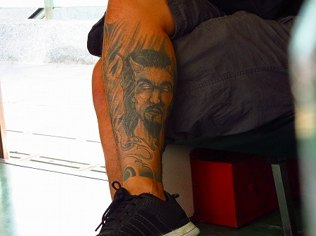
タトゥー以外はごくごく普通の、どっちかというとめっちゃケンカ弱そうな兄ちゃんでした。
新幹線の台中駅に隣接した新烏日駅にあった切符ロボ。
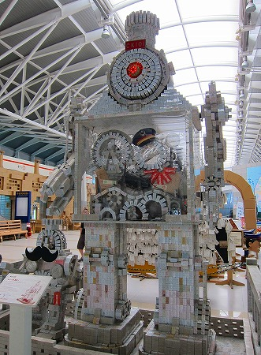
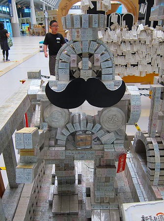
切符が重ねられてロボットになっているのだ。
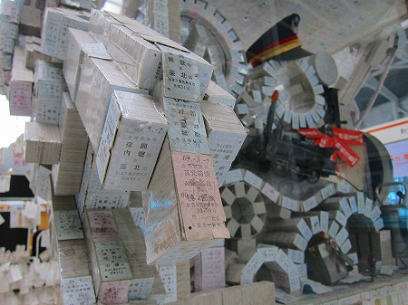
日本では見なくなりましたねー。硬券。
つか、ICカードを使うようになってから切符自体見なくなりましたねー。
・果物
今回、思いがけず長居してしまった員林の街。
こんな旅をしていなければ絶対寄ることのない街だが、活気があってイイ街だった。
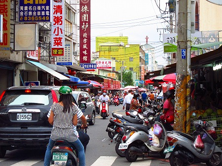
街には果物屋が多い。
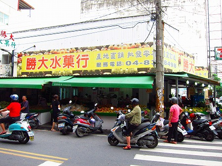
台湾は果物が豊富で、日本では滅多に見ることの出来ない果物が普通に売られたりしていてちょっとドキドキしちゃうのだ。
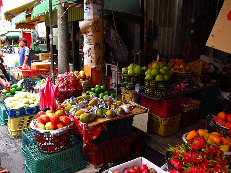
色も形も派手目なものが多い。
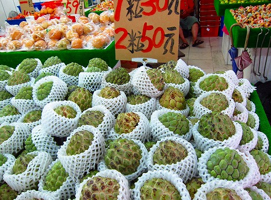
お釈迦サマの頭のようなフルーツ。
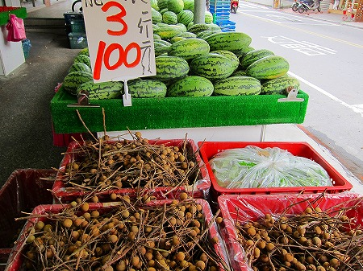
中でもオススメは龍眼（ロンガン）というライチのような果物。
果物屋を見かけると龍眼を買ってはチョコチョコ食べてました。
・看板諸々
員林の病院の看板。
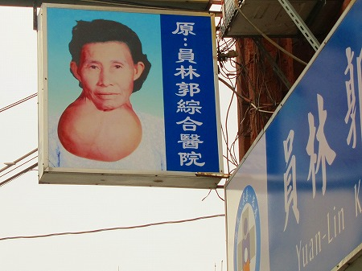
…この人どうしちゃったんでしょうか。
同じく員林の街で見かけた堅気の香りが全然しない怪しさ満点のビル。
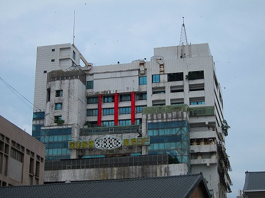
ただならぬオーラを周囲に撒き散らしまくっていた。
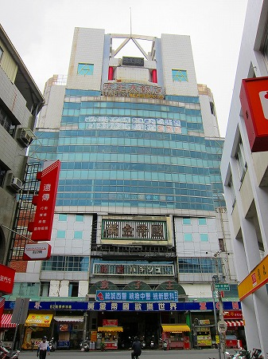
上から天王大飯店
ＫＴＶ(カラオケ）
MTV
21世紀 ＤＩＳＣＯ PUB
黄金帝国
松鶴パチソユ
孩子王
黄金帝国歓楽世界ZONE
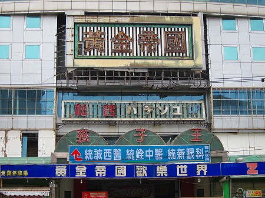
しかも一階以外は多分廃墟。
見てるだけでウットリしちゃいまいたよ。
桃園の街にて。
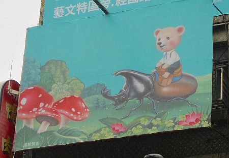
普通のマンションの広告なのにこのトリップ感ったら！
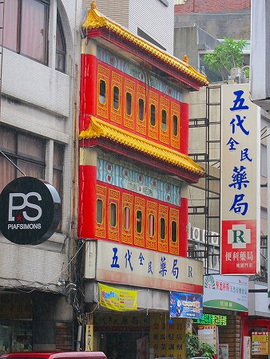
普通の薬局なのに凄い薬を調合してくれそう。
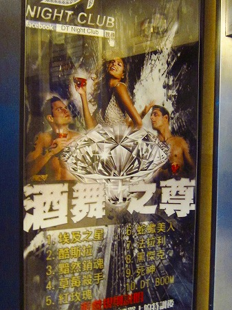
クラブのポスター。どうも漢字で表記するといささかオーバーに表現されちゃうようだ。
・鳥居
台中の駅近くにある台中公園。
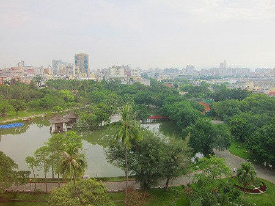
広大な公園は市民の憩いの場だ。
そして朝には地元の人達が集まり太極拳やラジオ体操、カラオケ、エアロビなどをしている。
朝早く目覚めたので散歩しつつその様子を眺めに行った。
ラジオ体操をしている集団の脇の芝生に大きな石の円柱が横たわっていた。
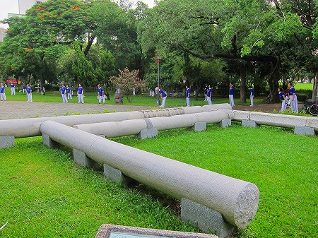
これは日本統治時代の台中神社の鳥居だという。
傍らの説明書きによれば明治44年に創立され、鳥居は大正10年に建てられ、その後新社殿落成にあたり解体されたという。
その後、西暦2000年になって公園整備にともなって「寝かせた状態」で設置したのだ。
つまり倒壊した鳥居をそのまま放置したわけでなく、わざわざ取り壊された鳥居を復元させたのだ。
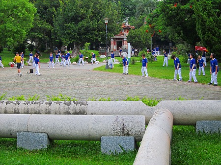
設置にあたって破損していた柱と梁の部分は新しく作り直したという。
何なんだ、そのマインド。
勿論ラジオ体操をしている人達は鳥居などお構いなしに黙々と体操をしている。
ありふれた日常の光景に見事に馴染んでいる神社の鳥居。
何だか鳥居も本来の任務を全うし、休んでいるようにも見えてくる。
…いつもながら何一つまとまる事もなくダラダラと終わらせていただきますよ。
おしまい